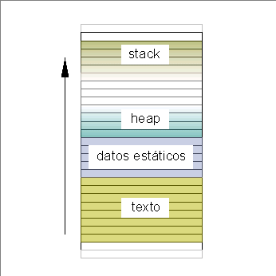

Pese a la gran cantidad de tiempo que lleva en actividad el lenguaje, todavía es objeto de reformulaciones. En 1999 los organismos de estandarización ISO y ANSI, conjuntamente, han declarado adoptada la norma llamada "C99" o "C2k". A partir de este momento los compiladores han empezado a incorporar, paulatinamente, todas las características de la norma; este es un proceso que llevará una cantidad de tiempo difícil de predecir. Es posible esperar la publicación de un standard C04 en el año 2004, ya que en teoría el ISO revisa sus normas cada cinco años.
El programa compilado queda contenido en un archivo, pero al ser invocado, se carga en memoria y allí se despliega en una cantidad de secciones de diferentes tamaños y con distintas funciones. La manera como se distribuyen realmente estas secciones en la memoria física depende fuertemente de la forma de administración de memoria del sistema operativo para el cual está construido. Sin embargo, el siguiente modelo ideal puede servir de referencia para ilustrar algunas particularidades y problemas que irán surgiendo con el estudio del lenguaje.
El programa cargado en memoria se dividirá, grosso modo, en cuatro regiones: código o texto, datos estáticos, datos dinámicos (o heap), y pila (o stack).
|
 |
El mapa de memoria de un programa se divide conceptualmente en cuatro regiones |
La región de código contendrá el texto del programa, es decir, la versión ejecutable de las instrucciones que escribió el programador, traducidas por el compilador al lenguaje de la máquina. En general, el programa C fuente se compondrá de funciones, que serán replicadas a nivel de máquina por subrutinas en el lenguaje del procesador subyacente. Algunas instrucciones C resultarán en última instancia en invocaciones a funciones del sistema (por ejemplo, cuando necesitamos escribir en un archivo).
La región de datos estáticos es un lugar de almacenamiento para datos del programa que quedan definidos al momento de la compilación. Se trata de datos cuya vida o instanciación no depende de la invocación de las funciones. Son las variables estáticas, definidas en el cuerpo del programa que es común a todas las funciones. A su vez, esta zona se divide en dos: la de datos estáticos inicializados explícitamente por el programa (zona a veces llamada bss por motivos históricos) y la zona de datos estáticos sin inicializar (a veces llamada data) que será llenada con ceros binarios al momento de la carga del programa.
El tamaño de las regiones de código y de datos estáticos está determinado al momento de compilación y es inamovible. Las otras dos regiones quedan en un bloque cuyo tamaño inicial es ajustado por el sistema operativo al momento de la carga, pero puede variar durante la ejecución. Este bloque es compartido entre ambas regiones. Una de ellas, la de datos dinámicos o heap, crece "hacia arriba" (hacia direcciones de memoria más altas); la otra, la pila del programa o stack, crece "hacia abajo" (en sentido opuesto).
Un programa C puede utilizar estructuras de datos dinámicas, como listas o árboles, que vayan creciendo al agregárseles elementos. El programa puede "pedir" memoria cada vez que necesite alojar un nuevo elemento de estas estructuras dinámicas, o para crear buffers temporarios para cualquier uso que sea necesario. En este caso, el límite del heap se irá desplazando hacia las direcciones superiores. Es su responsabilidad, también, liberar esta memoria cuando no ya sea necesaria, ya que no existe un mecanismo de "recolección de basura", lo cual sí existe en otros lenguajes, para desalojar automáticamente objetos que ya no se utilicen.
Por otro lado, un programa que realice una cadena de invocaciones de muchas funciones, y especialmente si éstas utilizan muchas variables locales, hará crecer notablemente su stack, desplazando el tope de la pila hacia abajo. La región del stack es el lugar para la creación y destrucción de variables locales, que son aquellas que viven mientras tiene lugar la ejecución de la función a la que pertenecen. La destrucción de estas variables sí es automática, y se produce al momento de finalizar la ejecución de la función.
Volveremos sobre este modelo en varias ocasiones para explicar algunas cuestiones especiales.